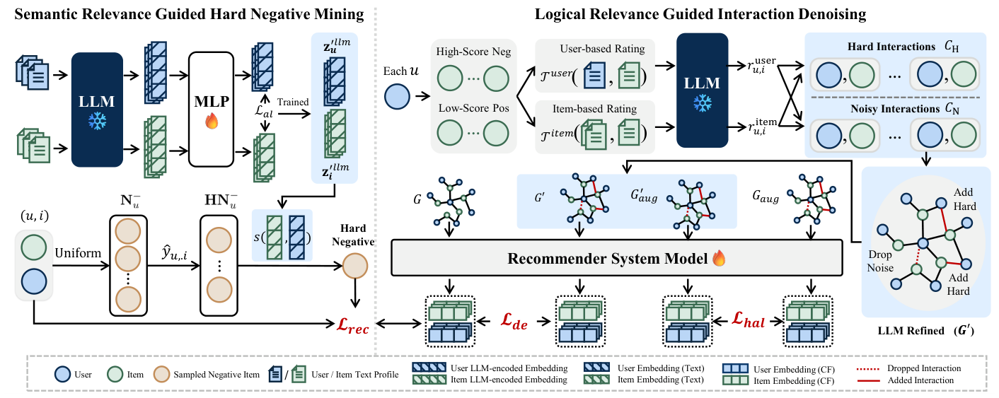

Hard vs. Noise: Resolving Hard-Noisy Sample Confusion in Recommender Systems via Large Language Models (基于大语言模型破解推荐系统困难-噪声样本混淆)
- 会议/期刊: AAAI 2026
- 作者与机构: Tianrui Song, Wen-Shuo Chao, Hao Liu（香港科技大学（广州）/ 香港科技大学）
- 推荐链路定位: 召回（图协同过滤训练阶段去噪 + 负采样）
- 研究方向: 自监督对比学习与交互去噪 / 大语言模型推荐
- 论文原文: https://arxiv.org/abs/2511.07295v2
- 开源代码: https://github.com/TianRui-Song717/LLMHNI
TL;DR (1分钟核心速览)
隐式反馈去噪的经典假设是"噪声样本损失高、预测分高"，但本文发现困难样本与噪声样本在损失值和预测分数上分布高度重叠（图1），导致基于数值模式的丢弃/重加权把宝贵的困难样本一并误杀。作者提出 LLMHNI，用 LLM 编码的语义相关性指导困难负采样并过滤假阴性，用 LLM 推理的逻辑相关性构建增强交互图做跨图对比去噪，并以目标对齐与随机边丢弃对比学习分别缓解"目标错配"与"幻觉边"。在 Amazon-books/Yelp/Steam 三数据集、NGCF 与 LightGCN 双骨干上，全库排序 Recall@20 相对最强基线 LLaRD 仍稳定领先，平均较原始骨干提升约 45%。
Background & Motivation (背景与核心矛盾)
- 主流范式: 以 BPR 为目标，将观测交互视为正、未观测视为负；去噪分两派——样本丢弃（T-CE 按高损失动态阈值剔除）与样本重加权（BOD 双层优化学权重），均依赖损失值/预测分/梯度等协同数值模式识别噪声。
- 前人局限: ① 困难样本（如长尾但真实偏好）与噪声样本（误点击、位置偏置）在训练全程的损失与预测分分布几乎重合，单靠数值模式无法区分，误杀困难样本直接损害偏好建模；② 纯协同信号本身信息不足，缺少可判别"语义/逻辑上是否真的相关"的外部辅助信号。
- 核心洞察 (Key Insight): 困难样本与噪声样本的差异不在"模型有多不确定"，而在"用户与物品在语义与逻辑层面是否真的匹配"——这正是 LLM 的语义编码与推理能力可以提供、而协同数值模式无法提供的正交信号。
- 本文切入点: 引入 LLM 的语义相关性（文本嵌入相似度）与逻辑相关性（LLM 推理评分）两类辅助信号，分别注入负采样与图去噪两个环节，并针对性解决嵌入目标错配与 LLM 幻觉两大副作用。
Method (核心方法设计)
1. 整体框架 (Overall Architecture)
LLMHNI 在标准图协同过滤骨干（NGCF/LightGCN）之上并联两条 LLM 辅助支路。语义支路：用 LLM 编码用户/物品文本画像，经 MLP 投影到推荐表征空间做目标对齐，对齐后的嵌入用于在动态困难负样本池中挑选"预测分高但语义相似度最低"的负例，从而既采到困难负例又剔除假阴性。逻辑支路：先用预训练推荐器筛出高分负例与低分正例构成候选集，交由 LLM 做用户视角与物品视角双评分，仅双高者判为困难样本、其余判为噪声，据此增删边得到增强图 \(G'\)，通过跨图对比对齐一致交互、抑制不一致交互；再对\(G\)与\(G'\) 各做随机边丢弃生成两视图做图对比，压制幻觉边。最终 BPR 损失与两项对比损失联合优化。
flowchart TD
A["用户/物品文本画像 + 原始交互图 G"] --> B["LLM 编码 + MLP 目标对齐"]
A --> C["预训练推荐器筛候选 → LLM 双视角逻辑评分"]
B --> D["语义引导困难负采样（滤假阴性）"]
C --> E["增删边构建增强图 G'"]
E --> F["跨图对比 L_de + 随机边丢弃图对比 L_hal"]
D --> G["BPR 联合优化 → 打分召回"]
F --> G
2. 关键设计拆解 (Key Designs)
-
目标对齐的语义嵌入 + 语义引导困难负采样：LLM 文本嵌入为通用语言任务训练，用户与物品向量在空间中各自成簇（图8a），直接算相似度会误导判别。作者以"既在文本相似度 Top-\(N\)又与用户有真实交互"构造可靠伪正例集\(\mathcal{I}^{al+}_u\)，用 InfoNCE 训练 MLP 投影器： \(\mathcal{L}_{al}=-\log\frac{\exp(\mathbf{z}_u\cdot\mathbf{z}_{i^{al+}}/\tau)}{\exp(\mathbf{z}_u\cdot\mathbf{z}_{i^{al+}}/\tau)+\sum_{k=1}^{N}\exp(\mathbf{z}_u\cdot\mathbf{z}_{i^{al-}_k}/\tau)}\)对齐后用户/物品表征互相交织（图8b–d），相似度才具备推荐语义。采样时维护困难负例池，按预测分概率更新，再取池中语义相似度最低者作负例：\(j=\arg\min_{k\in\mathcal{HN}^-_u}s(\mathbf{z}'^{llm}_u,\mathbf{z}'^{llm}_{j_k})\)。直觉是：预测分高说明模型"困惑"，语义相似度低说明"确实不相关"，二者交集才是真困难负例，语义相似度高者则视为假阴性剔除。
-
逻辑相关性推断与跨图对比去噪：全量 pair 调 LLM 不可行，故用预训练推荐器按预测分采样高分负例与低分正例构成候选集 \(\mathcal{C}\)，LLM 分别以用户画像（\(\mathcal{T}^{user}\)）和用户高分公司集合（\(\mathcal{T}^{item}\)）为上下文给出 High/Mid/Low 评分。仅当双视角均为 High 判为困难样本\(\mathcal{C}_H\)，其余为噪声\(\mathcal{C}_N\)，据此构造\(E'=E\setminus\{e_{u,i}|(u,i)\in\mathcal{C}_N\}\cup\{e_{u,i}|(u,i)\in\mathcal{C}_H\}\)。跨图对比损失\(\mathcal{L}_{de}\)拉近\(G\)与\(G'\)上一致的\((u,i)\) 表征、压制不一致者——本质是让 LLM 判断只在"与原图共识"时才生效，避免单边错误标签直接污染训练。
-
幻觉鲁棒对比学习与联合优化：LLM 推断的边可能含幻觉，故对 \(G\)与\(G'\)各以概率\(\rho\)随机丢边得两视图，用\(\mathcal{L}_{hal}\) 最大化同一节点两视图表征一致性： \(\mathcal{L}^{user}_{hal}=\sum_{u\in\mathcal{U}}-\log\frac{\exp(s(\mathbf{z}^{(1)}_u,\mathbf{z}^{(2)}_u)/\tau_{hal})}{\sum_{v\in\mathcal{U}}\exp(s(\mathbf{z}^{(1)}_u,\mathbf{z}^{(2)}_v)/\tau_{hal})}\)随机丢边使幻觉边难以在两视图同时稳定存在，从而被对比目标自然抑制。总损失\(\mathcal{L}_{total}=\mathcal{L}_{rec}+\lambda_1\mathcal{L}_{de}+\lambda_2\mathcal{L}_{hal}\)；负采样为"均匀采样\(M=30\)更新池 + 语义挑选\(K=10\)"的混合策略，LLM 信号离线预生成，不进入每步训练开销。
Experimental Setup & Evaluation Protocol (实验设置与评估协议)
- 数据集与预处理: 沿用 RLMRec 提供的文本画像与预处理，Amazon-books/Yelp 过滤评分 <3，均做 k-core 过滤，按 3:1:1 划分训练/验证/测试。
| 数据集 | #Users | #Items | #Interactions | 稀疏度 | 特征/场景说明 |
|---|---|---|---|---|---|
| Amazon-books | 11,000 | 9,332 | 120,464 | 99.88% | 图书，含用户/物品文本画像 |
| Yelp | 11,091 | 11,010 | 166,620 | 99.86% | 本地商户签到 |
| Steam | 23,310 | 5,237 | 316,190 | 99.74% | 游戏平台，无评分过滤 |
- 数据划分与防穿越 (Splitting Strategy): 比例划分（3:1:1），非 Leave-One-Out；噪声鲁棒性实验在训练集注入 5%/10%/15%/20% 虚假交互、测试集保持不变。
- 排名评测协议 (Ranking Protocol): 报告 Recall@K 与 NDCG@K（K=10,20），遵循去噪推荐惯例的全库排序口径；显著性采用 \(t\)-test，\(p<0.01\)。
- 对比基线与超参设置: 骨干 NGCF 与 LightGCN；基线含实例级（WBPR、T-CE、BOD）、表征级（SGL、SimGCL、XSimGCL）、LLM 增强级（RLMRec、LLaRD）。嵌入维度 \(d=64\)，batch 1024，学习率 1e-3，Adam；LLM 用 gpt-4o-2024-08-06，编码器 text-embedding-ada-002，\(M=30\)、\(K=10\)、\(N=50\)、\(\tau=0.5\)。
Key Experimental Results (实验关键数据)
1. 主实验对比 (Main Results)
LightGCN 骨干（节选核心指标，完整见原文表1）：
| 方法 | Amz R@10 | Amz R@20 | Amz N@20 | Yelp R@20 | Yelp N@20 | Steam R@20 | Steam N@20 |
|---|---|---|---|---|---|---|---|
| Normal | 0.0950 | 0.1415 | 0.0893 | 0.1011 | 0.0659 | 0.1317 | 0.0858 |
| T-CE | 0.0990 | 0.1499 | 0.0939 | 0.1216 | 0.0779 | 0.1376 | 0.0893 |
| BOD | 0.1273 | 0.1792 | 0.1162 | 0.1355 | 0.0882 | 0.1484 | 0.0966 |
| SGL | 0.1091 | 0.1588 | 0.1030 | 0.1235 | 0.0803 | 0.1378 | 0.0903 |
| XSimGCL | 0.1153 | 0.1637 | 0.1084 | 0.1277 | 0.0830 | 0.1385 | 0.0903 |
| RLMRec | 0.1034 | 0.1601 | 0.0960 | 0.1275 | 0.0815 | 0.1452 | 0.0924 |
| LLaRD | 0.1408 | 0.2028 | 0.1326 | 0.1574 | 0.1008 | 0.1631 | 0.1059 |
| LLMHNI | 0.1423 | 0.2040 | 0.1369 | 0.1594 | 0.1047 | 0.1646 | 0.1087 |
| Improv. vs LLaRD | +1.07% | +0.59% | +3.24% | +1.27% | +3.87% | +0.92% | +2.64% |
NGCF 骨干上 LLMHNI 同样全面最优（如 Amazon R@20 0.1852 vs LLaRD 0.1834），平均较原始 NGCF 提升 46.55%、较原始 LightGCN 提升 45.31%；相对实例级/表征级去噪提升 11.78%–37.73%，相对 LLM 增强基线提升约 2.47%–33.86%。
2. 消融实验 (Ablation Study)
LightGCN + Amazon-books：
| 变体 | R@10 | R@20 | N@10 | N@20 |
|---|---|---|---|---|
| w/o SR lmns（语义困难负采样→均匀） | 0.1199 | 0.1799 | 0.0937 | 0.1112 |
| w/o SR al（去目标对齐） | 0.1248 | 0.1848 | 0.0982 | 0.1174 |
| w/o LR de（去跨图对比） | 0.1125 | 0.1772 | 0.0855 | 0.1060 |
| w/o LR hal（去幻觉鲁棒对比） | 0.1294 | 0.1854 | 0.1047 | 0.1230 |
| LLMHNI 完整 | 0.1423 | 0.2040 | 0.1168 | 0.1369 |
3. 关键实验发现 (Key Findings)
- 逻辑支路是主引擎，语义支路是增益器：移除跨图对比 \(\mathcal{L}_{de}\) 后 R@20 从 0.2040 跌至 0.1772（−13.1%），跌幅最大；移除语义困难负采样跌至 0.1799（−11.8%），说明"区分困难/噪声"的核心收益来自逻辑相关性，而语义信号主要改善负例质量。
- 两个"防副作用"模块不可省：去掉目标对齐（0.1848）与去掉幻觉鲁棒对比（0.1854）均显著掉点，验证了 LLM 嵌入目标错配与幻觉边若不处理会反噬去噪效果，而非可有可无的正则。
- 噪声鲁棒性单调领先：在 5%–20% 注入噪声下，LLMHNI 在 Amazon-books 与 Yelp 上 Recall@20 全程最高且下降斜率最平缓（图4），说明其判别依据不随噪声比例漂移；代价是每 epoch 训练时间最高（Amazon 6.97s vs BOD 5.75s、SGL 3.56s），但 LLM 调用离线完成，在线开销与骨干同阶。
Highlights & Limitations (亮点、对比与审稿批判)
- 与代表作对比 (vs. Prior Work): T-CE/BOD 依赖损失与预测分的数值模式，天然无法拆解困难-噪声重叠；SGL/SimGCL/XSimGCL 只做表征增广，不判别样本真伪；RLMRec/LLaRD 虽引入 LLM 知识，但用于表征增强或知识互信息，均未把 LLM 用于困难样本识别——这正是本文的差异化定位。
- 可迁移亮点: ① "预测分高 ∩ 语义相似度低"的困难负例判据可低成本移植到任意双塔/图召回负采样；② 用"原图 vs LLM 增强图"的跨图对比作为外部知识的软门控，可推广到任何引入外部信号增删边的场景。
- 审稿级局限批判: ① 逻辑评分依赖 gpt-4o 离线批量推理，候选集规模、prompt 设计与 API 成本对工业部署是硬约束，论文未给出 LLM 调用总量与费用；② 困难/噪声的判定阈值（双 High、Top-\(N\)=50、\(n_1/n_2\)）为人工设定，图5显示温度参数\(\tau\)敏感、\(\lambda\) 较稳，但缺少对评分阈值与候选采样比例的敏感性分析；③ 仅在两个 GNN 骨干与三个中等规模数据集验证，未覆盖序列/生成式骨干与超大规模工业场景。
Rating (四维评分)
- 方法创新性 (Novelty): ⭐⭐⭐⭐ （首次系统提出并命名"困难-噪声混淆"问题，双 LLM 相关性信号 + 目标对齐 + 幻觉抑制的组合设计有清晰的问题驱动逻辑）
- 评估协议与实验扎实度 (Protocol & Experiments): ⭐⭐⭐⭐ （三数据集双骨干、8 个基线、\(p<0.01\) 显著性、噪声注入与效率分析齐全，但划分与打分协议细节依赖前作、缺阈值敏感性）
- 写作与数学规范度 (Clarity & Rigor): ⭐⭐⭐⭐ （动机图与案例研究直观，公式与损失定义完整；部分符号在正文与附录间略有出入，复杂度分析较简）
- 工业落地与复现价值 (Industrial & Practical Value): ⭐⭐⭐⭐ （代码已开源、LLM 信号离线预生成不增在线延迟，但 LLM API 成本与 prompt 工程是落地门槛）